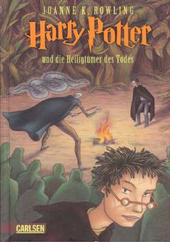

HPHarry Potter va uning do'stlarining Voldemortga qarshi so'nggi hal qiluvchi sarguzashti.
Harry Potter Hogwartsga qaytolmaydi va Dumbledor bilan boshlagan ishini oxiriga yetkazish uchun qolgan Horcruxlarni izlashi kerak. Ron va Germina bilan birga xavfli sayohatga chiqqan Harry o'lim tuhfalari izidan borib, Voldemort bilan so'nggi jangga tayyorgarlik ko'radi. Bu nemis tilidagi nashr Harry Potter turkumining so'nggi qismidir.